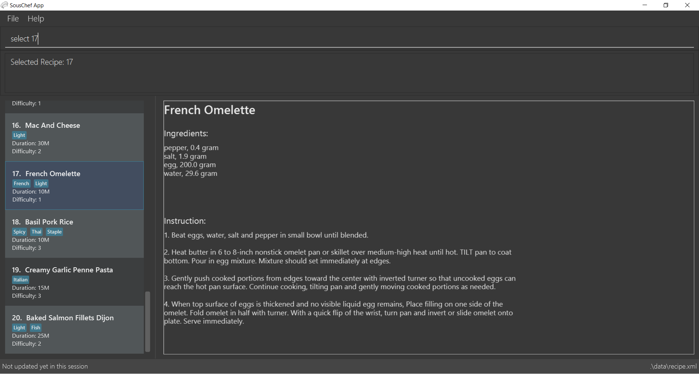

By: Team W10-4 Since: SEP 2018 Licence: MIT
1. Introduction
Souschef is your smart cooking sidekick, offering personalised guidance every step of the way. From recipe recommendations just for you, to meal planning and inventory management, Sous Chef has everything you need to improve life in the kitchen. The application works with a Command Line Interface (CLI) for speedy provision of recipe choices, management of your cooking plan while guiding you through the preparation process. With a few commands, this kitchen helper will be there to keep cooking as simple as ABC. Get started with Section 2, “Quick Start” and experience the fun from cooking meals.
2. Quick Start
-
Ensure you have Java version
9or later installed in your Computer. -
Download the latest
souschef.jarhere. -
Copy the file to the folder you want to use as the home folder.
-
Double-click the file to start the app. The GUI should appear in a few seconds.
 -
Type the command in the command box and press Enter to execute it.
e.g. typing-helpand pressing Enter will open the help window. -
Some example commands you can try:
-
-search KEYWORD… [x/KEYWORD]…: search for recipes related and excluded from the keywords -
-favorite: display personal favorited recipes -
-plannerlist: display personal meal schedule -
-exit: exits the app
-
-
Refer to Section 3, “Features” for details of each command.
3. Features
Command Format
-
Words in
UPPER_CASEare the parameters to be supplied by the user e.g. inadd n/NAME,NAMEis a parameter which can be used asadd n/Chicken Rice. -
Items in square brackets are optional.
-
Items with
… after them can be used multiple times including zero times e.g.[t/TAG]…can be used ast/Japanese,t/Halal t/Seafoodetc.
3.1. Universal Commands
3.1.2. Display recipes database: -recipe
Display all recipes records.
Format:
-recipe
3.1.3. Display recipe suggestion: -suggest [coming in V1.4]
Display system suggestions based on user’s past navigation history
and favorites.
Format:
-suggest
3.1.4. Display new recipe: -surprise [coming in V1.4]
Display a random recipe for the user who wants to try something bold
and new but has no idea what they want.
Format:
-surprise
3.1.5. Display favorites: -favourite
List all the bookmarked favourite recipes of the user.
Format:
-favourite
3.1.6. Display ingredient manager: -ingredient
Ingredient manager is an inventory manager that helps stock
tracking of existing ingredient available at home.
Format:
-ingredient
3.1.7. Display meal planner: -mealplanner
Display current Meal Planner. Shows the planned meals for breakfast,
lunch and dinner for previously planned days.
Format:
-mealplanner
3.1.8. Display health plan: -healthplan
Display the current health plan, shows health plan set by the user and the days added into the plan
which is tied to meal plans
Format:
-healthplan
3.1.9. Exit application: -exit
Format:
-exit
3.2. Recipes Commands
3.2.1. Add a recipe: add n/NAME c/TIME d/DIFFICULTY [t/TAG]… cont i/INSTRUCTION… [c/TIME] end
Add new recipe.
Format:
add n/NAME c/TIME d/DIFFICULTY [t/TAG]…
cont i/INSTRUCTION… [c/TIME]
cont…
end
INSTRUCTION:
TEXT… [#INGREDIENT_NAME AMOUNT SERVING_UNIT]…
3.2.2. Edit a recipe: edit INDEX [n/NAME] [c/TIME] [d/DIFFICULTY] [t/TAG]…
Edit new recipe.
Format:
edit INDEX [n/NAME] [c/TIME] [d/DIFFICULTY] [t/TAG]…
or
edit INDEX s/STEP i/INSTRUCTION [c/TIME]
INSTRUCTION:
TEXT… [#INGREDIENT_NAME AMOUNT SERVING_UNIT]…
3.2.3. Display recipe details: select INDEX
View a recipe and its details from the list.
Format:
select INDEX
3.2.4. Search recipes: find KEYWORD…
Show recipes related to the keyword(s).
Keywords include but not limited to cuisines (Indian, Japanese),
dietary types (vegan, Keto),
ingredients (egg, broccoli),
preparation time (quick, 30mins)
and difficulty (easy, simple, challenging).
Format:
find KEYWORD…
3.2.5. Delete recipe: delete INDEX
Delete a recipe and its details from the list.
Format:
delete INDEX
3.2.6. Activate cook-mode [coming in V2.0]: cook INDEX
A cook mode that provides step-by-step guidance to aid real-time cooking.
Format:
cook INDEX
3.2.7. Add recipe to favourite: favourite
Add a recipe to their favourites list.
Format:
favourite INDEX
3.2.8. Add to meal plan: plan INDEX DATE MEAL
Add a specified recipe to meal plan.
Format:
plan INDEX DATE MEAL
3.2.9. Add to review [coming in V2.0]: review [Comment] RATING
Add comment and rating to current recipe.
Format:
review [Comment] RATING
3.3. Ingredient Manager Commands
3.3.1. Add an ingredient: add
Adds an ingredient to the ingredient manager.
Format:
add NAME AMOUNT SERVING_UNIT DATE
3.3.2. List all ingredients: list
Shows a list of user’s ingredients. Ingredients are sorted by entered date, so that the ingredients entered earlier
are placed high in order.
Format:
list
3.3.3. Edit ingredient info: edit
Edit an existing ingredient in the ingredient manager.
Format:
edit INDEX FIELD_NAME NEW_INFO (FIELD_NAME NEW_INFO)… end
3.3.4. Find ingredient: find
Find ingredients whose name contains any of the given keywords.
Format:
find KEYWORD…
3.3.5. Delete ingredient: delete
Delete ingredient added by user according to its index in last shown list.
Format:
delete INDEX
3.4. Recipe-Ingredient Query Commands
3.4.1. View Recipe based on Ingredients
By default, the list has recipes that are stored in normal recipe list. User can filter, sort the recipe list
based on ingredients. Also, needed amount of ingredients is calculated based on the number of serving unit so that
user can check it with select command later.
Format:
recipe NUMBER_OF_SERVINGS include [inventory] KEYWORD… prioritize [inventory] KEYWORD…
3.4.2. View needed amount of ingredients for a Recipe
For a recipe on the list resulting from cross find command, user can view amount of respective ingredients that
needs to be prepared additionally. It
refers to Ingredient Manager to get the amount of ingredients the user currently have.
Format:
select INDEX
3.4.3. List all recipes: list
Shows a list of recipes. The list restores the default mode, erasing the result of cross find command.
Format:
list
3.5. Meal Planner Commands
3.5.1. Delete recipe: delete
After displaying the meal planner, deletes the specified day.
Format: delete INDEX
3.5.3. Select recipe: select
Selects and views the details of a recipe at a specified meal slot of a specified day.
Format: select INDEX MEAL
3.6. Health-planner Command
3.6.1. Add plan: add
Adds a health plan under the user.
Required parameters are NAME, AGE, CURRENT HEIGHT, CURRENT WEIGHT,
TARGET WEIGHT, DURATION AND SCHEME
Format:
add n/NAME a/AGE h/HEIGHT w/CURRENTWEIGHT t/TARGETWEIGHT d/DURATION s/SCHEME
3.6.2. Delete plan: delete
After listing the list of health plans by user.
Deletes the plan selected by user.
Format:
delete INDEX
3.6.3. Edit plan: edit
After listing the list of health plans by User.
Prompts for edit on the plan selected by the user.
Format :
edit INDEX [n/NAME] [a/AGE] [t/TARGETWEIGHT] [h/HEIGHT] [w/CURRENTWEIGHT] [d/DURATION] [s/SCHEME]
3.6.4. Add current intake item: addDay
After being shown the meal planner list by the system
User selects to add to intake List
Format:
`addDay p/PlanIndex d/DayIndex'
3.6.5. Remove current intake item: deleteDay
After being shown the list of days from intake list
User selects day to remove and also the plan to remove from
Format:
deleteDay p/PlanIndex d/DayIndex
3.6.6. Show Meal Planner list beside Health Plan List : 'showMeal'
User enters command to view the full list of meals beside the health plan list
Format:
'showMeal'
3.6.7. View plan details : showDetails
After shown the list of health plans by the system
User enters command to see the details of the plan specified
Format:
showDetails INDEX
3.6.8. Compare overall intake against : compareIntake [coming in V2.0]
After being shown list of health plans
User enters command to compare against set health plan.
Format:
compareIntake PLAN_ID
3.7. Cook-Mode Commands [coming in V2.0]
3.7.1. Next Instruction
Proceed to next instruction.
Format:
Hit Enter key
3.7.2. Previous Instruction: b
Revert to previous instruction.
Format:
b/back
3.7.3. Start timer: s
Begin countdown timer.
Format:
s/start
3.7.4. Pause timer: p
Pause countdown timer.
Format:
p/pause
3.7.5. Reset timer: r
End/Reset countdown timer.
Format:
r/reset
3.7.6. End cook-mode: end
To end step-by-step instruction of cook-mode.
Format:
end
4. FAQ
Q: How do I transfer my data to another Computer?
A: Install the app in the other computer and overwrite the empty data file it creates with the file that contains the data of your previous Souschef folder.
5. Command Summary
Universal Commands
-
View help:
-help -
Display all recipe:
-recipe -
Display recipe suggestion:
-suggest[coming in V1.4] -
Display new recipe:
-surprise[coming in V1.4] -
Display favorites:
-favourite -
Display ingredient manager:
-ingredient -
Display meal planner:
-mealplanner -
Exit application:
-exit
Recipes Commands
-
Add a recipe:
add n/NAME c/TIME [t/TAG]…
cont i/INSTRUCTION [c/TIME]
cont…
end-
INSTRUCTION:
[TEXT]… [#INGREDIENT_NAME AMOUNT SERVING_UNIT]…
-
-
Edit a recipe:
edit INDEX [n/NAME] [c/TIME] [d/DIFFICULTY] [t/TAG]…
or
edit INDEX s/STEP i/INSTRUCTION [c/TIME]-
INSTRUCTION:
TEXT… [#INGREDIENT_NAME AMOUNT SERVING_UNIT]…
-
-
Display recipe details:
select INDEX -
Search recipes:
find KEYWORD… -
Delete recipe details:
delete INDEX -
Activate cook-mode [coming in V2.0]:
cook INDEX
Recipe Details Commands
-
Add recipe to favourite:
favourite -
Add to meal plan:
plan INDEX DATE MEAL -
Active cook-mode:
cook
Ingredient Manager Commands
-
Add an ingredient:
add NAME AMOUNT SERVING_UNIT DATE -
List all ingredients:
list -
Clear all ingredients:
clear -
Edit ingredient info:`edit INDEX FIELD_NAME NEW_INFO (FIELD_NAME NEW_INFO)… end`
-
Search ingredient:
find KEYWORD… -
Delete ingredient:
delete INDEX
Recipe-Ingredient Query Commands
-
View Recipe based on Ingredients:
recipe NUMBER_OF_SERVINGS include [inventory] KEYWORD… prioritize [inventory] KEYWORD… -
View needed amount of ingredients for a Recipe:
select INDEX -
List all recipes:
list
Meal Planner Commands
-
Delete day:
delete INDEX -
Clear planner:
clear -
View recipe details:
select INDEX MEAL
Cook-Mode Commands [coming in V2.0]
-
Next Instruction: Hit Enter key
-
Previous Instruction:
b -
Start timer:
s -
Pause timer:
p -
Reset timer:
r -
End cook-mode:
end